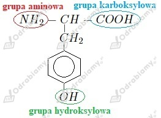
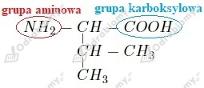
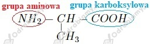
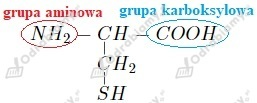
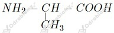
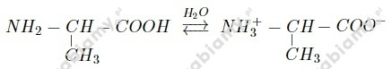
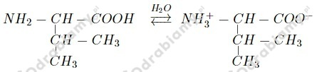

Podpisane grupy funkcyjne:

Wzory aminokwasów to:
c)

e)

f)

a)

b)
α-aminokwasem jest kwas 2-aminopropanowy (związek a), ponieważ w jego cząsteczce grupy aminowa i karboksylowa związane są z tym samym (drugim) atomem węgla.
Podane aminokwasy są izomerami, ponieważ wzór sumaryczny każdego z nich to C6H13O2N.
a)
b)

c)

a)
b)
Wzór sumaryczny tego aminokwasu to C4H9O3N. Liczymy masę cząsteczkową tego aminokwasu:
Liczymy zawartość procentową poszczególnych pierwiastków: